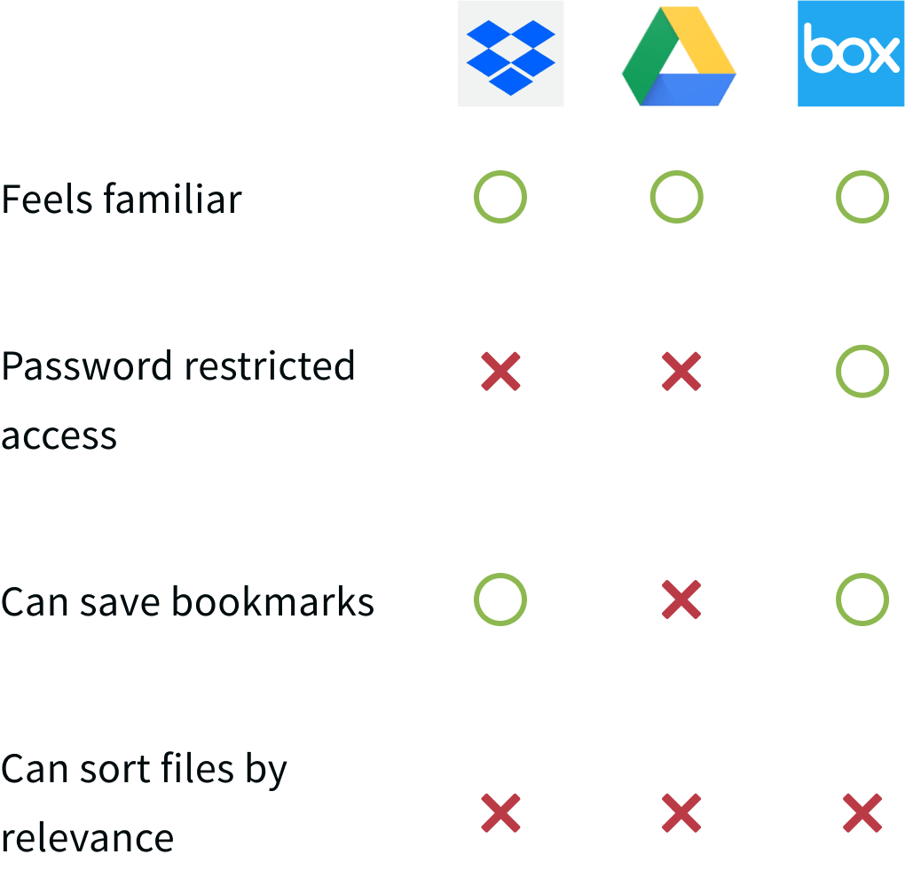
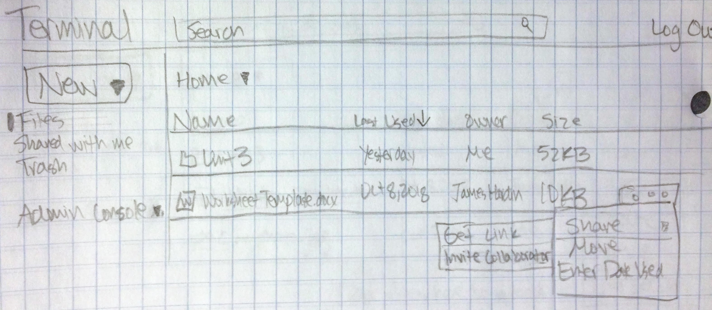
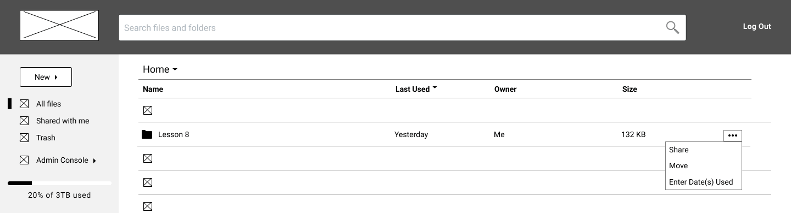
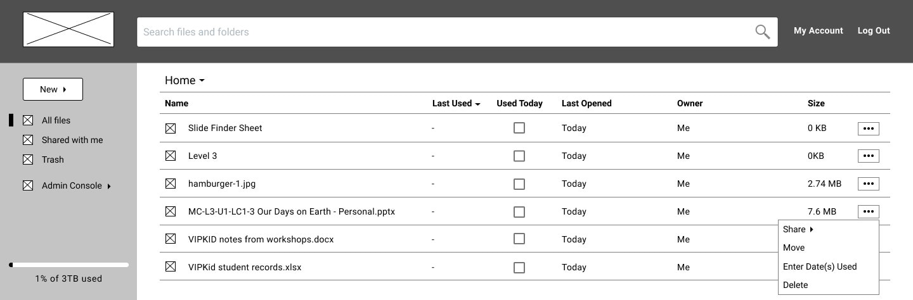

A cloud storage service designed exclusively for teachers, giving them the time they need to focus on what matters most: the students.
view invision prototypeRoles
- UX Research & Testing
- Visual Design
- Brand & Identity
Deliverables
- User surveys
- User personas
- Competitive Analysis
- User stories & flows
- Paper prototype
- Wireframes
- User testing analysis
- Logo sketches
- Style guide
- Hi-fi prototype
Tools
- Google Forms
- draw.io
- Figma
- Invision
- UsabilityHub
- maze.io
- Lookback
Problem
Current cloud storage services are not streamlined for the kind of organization teachers need to prep for class. Content is spread out in different shared folders, in emailed links, or in unsorted lists of bookmarks in browsers. And with constant curriculum updates, it's hard to know which files are relevant.
Solution
PrepHub offers teachers a familiar feel for cloud storage while providing more tailored features to meet their needs. It offers teachers a way to centralize all kinds of prep material, to bring relevant material to the top, and to enable password restriction on shareable links.
Research & Strategy
User Surveys
Before I could start designing anything, I needed to know what teachers liked and didn't like about cloud storage, if anything. These were my key discoveries:
64%
reference 2 or more websites during prep time and/or class
93%
reuse/reference digital material from prior lessons on cloud storage
66%
want password-restricted access to the files they share
Biggest frustrations with cloud storage:
- the organization of my materials has grown out of control.
- some things are duplicated repeatedly, making it hard to find the most recent copy
- I’d like more sorting options like name or topic, date(s), misc (e.g. how useful)
- my folder system has fallen into chaos after nonstop curriculum and program changes
- finding things quickly
Key Takeaways
Based on my user research, I found most teachers already used cloud storage. Therefore, my
service
would need to feel familiar. However, I found three key ways that cloud storage could be
optimized
for teachers:
1. Add explicit URL saving functionality for
teachers to access
all their digital prep
materials in
one place.
2. Make an obvious option to password protect the shared links for files.
3. Offer an obvious way to keep relevant files on top, unlike any competitor.
a. Sorting files by the “last used” date would allow
teachers to group files by dates they
taught
certain classes, keeping the most relevant files on top. If outdated files from old curriculum
remain on the cloud, teachers could look at the “last used” date to avoid time opening several
files, hunting for the right one.
b. The “last used” date could also be used by administrators of schools/districts to determine what files their teachers are using the most
User Personas
I developed two personas to help encapsulate what specific needs both teachers and administrators had. I used these personas as a reference point to ensure my design was meeting their needs.
Angela
Teacher
- Hard to keep materials organized over time as the curriculum changes
- Prep materials are spread out across different websites
- Easily find and edit relevant files on any device
- Keep websites for prepping organized with other materials
Frustrations:
Goals:
Kim
Administrator
- Not knowing how often materials are being used
- Having teachers only collaborate within one branch location
- Have a company-wide platform for sharing materials without filling up inboxes
- Discover what files teachers use the most
Frustrations:
Goals:
Competitive Analysis
While waiting for survey results to come in, I also performed a SWOT analysis of three other cloud storage services: Dropbox, Box, and Google Drive. (See link below.) After analyzing my survey results and seeing the specific features teachers needed, I simplified my competitive analysis into a matrix for each feature.
View SWOT analysis
Information Architecture
Wireframes & Testing
With flows in place, I began sketching rough wireframes for PrepHub. After some
A/B testing with
a design mentor for the landing page, I created hi-fi wireframes using Figma. I turned these
into
a prototype with InVision and administered user testing both in-person and remotely (via screen
sharing on Skype).
While users completed most tasks successfully, I learned from testing that several design
aspects weren't as intuitive as I expected. So, I made several changesto improve usability. The
biggest changes included:
1. Making an ellipsis menu available on every line item on the dashboard, without needing to hover over it
2. Adding a “Used Today” checkbox in every column to make updating the “last used” date easier and more obvious than hiding it in the ellipsis menu
3. Adding names and locations for teachers cited in the testimonials, so they seem more real/relatable
↓
↓
 See wireframe iterationsBranding
Identity Creation
After user research and testing, it was time to get serious about the look and feel of the brand. I wanted my brand to convey ease and straightforwardness. I also wanted it to be as clear as possible from first glance for whom and what the website was intended.
I settled on the name PrepHub because “hub” means “the effective
center of an
activity,
region, or network” and I wanted my website to be the effective host (or center) of all
prep
materials. The logo conveys the hub aspect, with the center apple
clearly
representing
teachers as its intended audience.
The color scheme feels like an elementary school environment. I
chose Lato as my
typeface
because it felt contemporary and easy-to-read.
My working brand typeface was Oswald, but one user pointed out
they would expect an
open, circular
serif style to go along with the elementary school vibe. Since Lato met those needs and
matched
the
body typeface, it was a shoe-in. To ensure consistency and adherence to these ideas across
all
parts of the project, I also made a style guide.
Visual Design
Preference Testing
I wanted to ensure my landing page, the first page people saw, left the best impression. So I executed several preference tests on it using UsabilityHub.
First, I tested photos vs illustrations. With only a 5% difference in opinions, I used testers' comments to determine graphics worked better . Users noted graphics matched the logo aesthetics, felt more modern, and that the photos were too abstract for illustrating each feature.
I also tested different layout combinations for the Testimonials and Plans sections. Testers preferred the second option below, with boxes around each testimonial and a Plans section that had similar boxes to those in the Features section.
Hi-fi Mockups & Testing
Finally, I turned my hi-fi mockups into a prototype on InVision and tested five users, both
in-person and remotely. I made the following discoveries from the tests and implemented
corresponding changes.
1. Some users prefer grid view so I added this view option.
2. I needed to clarify the wording in the modal windows for shared links and opening a doc, xls, or ppt in Open Office.


3. I needed more spacing and color in my left nav bar.


4. The “Used Today” checkbox was self-explanatory to users, but when asked to enter several dates on which a file was used, users tended to gravitate toward the “Last Used” column. I realized from this I would need a couple changes:
a. I implemented a hover state of the “Last Used” title to bring up a small box explaining what it means.

b. I would ask development to enable right clicks to open the ellipsis menu wherever clicked, and a double-click in the “Last Used” column to open the “Enter Date(s) Used” modal window.
view invision prototypeConclusion
Final Thoughts
1. Going into the project, I doubted that I would be able to come up with a strong brand identity since I don’t have a background in art. However, I learned that sketching and mindmapping are extremely valuable brainstorming tools that should not be overlooked. I am extremely pleased with the look of feel of the PrepHub brand, especially its logo and name; it is clean and clearly conveys the site’s audience and purpose.
2. As a former teacher myself, I thought I had a pretty good idea of what teachers needed in cloud storage. However, through user testing, I quickly realized I needed to stop assuming I knew what was best for every user. I witnessed how every user has a different approach to navigating user interfaces. By basing every iteration off of user feedback, PrepHub's design is more useful than I could've ever imagined. I truly wish it had existed when I was teaching.
3. In thinking about further development, I would like more testing participants from my target audience to ensure every detail is as intuitive as possible. I also believe there is opportunity for PrepHub to create its own teacher-focused creative software (for documents, slide decks, etc.) through further research, wireframing, prototyping, and usability testing.